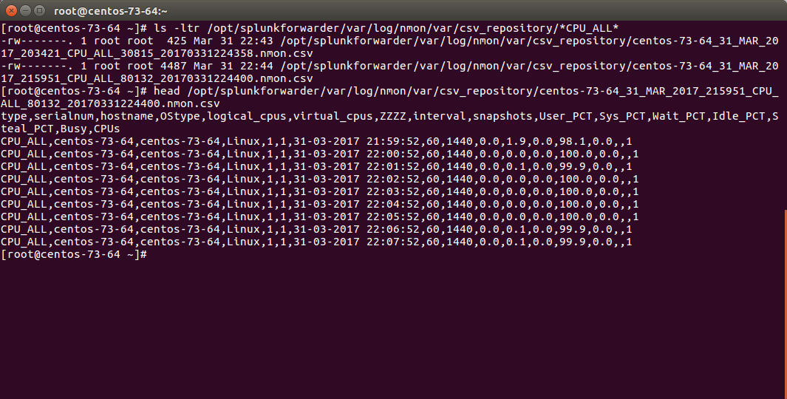
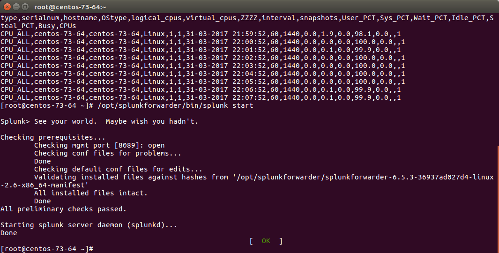
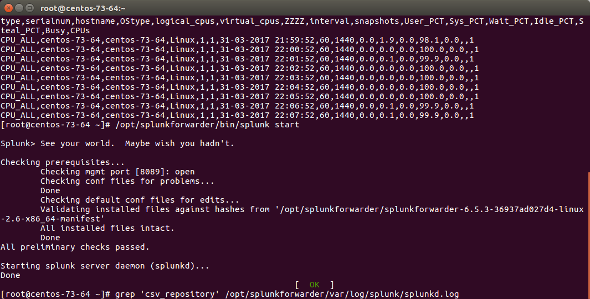
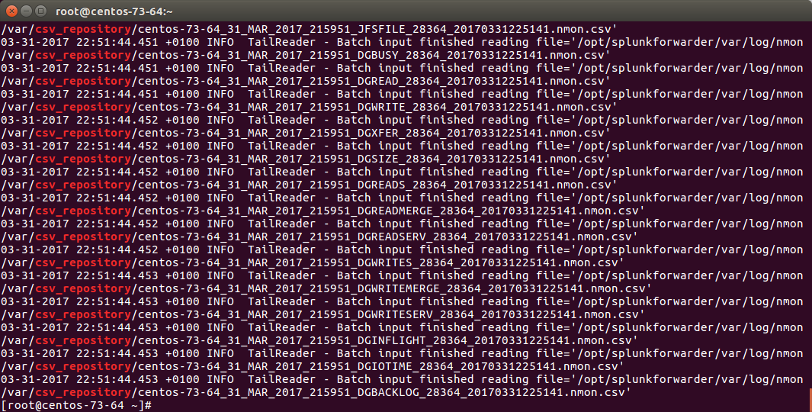

Troubleshoot¶
There is a nice and complete troubleshoot guide in the Nmon Core application:
http://nmon-for-splunk.readthedocs.io/en/latest/Userguide.html#troubleshooting-guide-from-a-to-z
In a nutshell:
Expected running processes¶
Since the 1.3.x branch, you should find various processes running:
- 1 x nmon process (or 2 x nmon processes during the parallel interval)
- 1 x main Perl or Python fifo_reader process (or 2 x processes during the parallel interval)
- 1 x subshell fifo_reader process (or 2 x processes during the parallel interval)
On a Linux box:

On AIX, the nmon process will be called “topas-nmon”
On Solaris, the sarmon process will be called “sadc”
Starting processes¶
If you run in trouble and want to troubleshoot the situation, the easiest approach is stopping Splunk, kill existing nmon process and run the tasks manually:
Stop Splunk and kill the nmon process:
./splunk stop

You will observe that killing the nmon process will automatically terminate the fifo_reader.pl|.py and the subshell fifo_reader.sh. This the expected behavior, and mandatory.
If the processes do not stop, then your problem became mine and please open an issue !
Now we can manually starting the processes, example:
/opt/splunkforwarder/bin/splunk cmd /opt/splunkforwarder/etc/apps/TA-nmon/bin/nmon_helper.sh
Please adapt the paths to your context

Let’s summarize what happened here:
- nmon_helper.sh starts the fifo reader, if there is no fifo_reader running, the “fifo1” process will be started
- the fifo_reader.pl|.py starts a fifo_reader.sh process in the background
- nmon_helper.sh starts the nmon process which will write its data to the relevant fifo file
- the nmon process cannot start if the fifo_reader has not started
If something unexpected happens and that the fifo_reader and nmon process do not start normally, you may want to trouble shoot the nmon_helper.sh script.
You can do very easily by commenting out “# set -x”, re-run the script and analyse the output. (you might need to add the set-x within the functions as well)
Checking fifo_reader processes¶
The fifo_reader processes will continuously read the fifo file writen by the nmon process, and generate various dat files that represent the different typologies of nmon data:

How this it work?
- The fifo_reader.sh reads every new line of data writen to the fifo file (named pipe) and sends the data to the fifo_reader.pl|.py
- The fifo_reader.pl|.py parses the lines and applies various regular expressions to decide where to write the data, depending on its content
- If there were existing .dat files at the startup of the fifo_reader processes, those dat files are rotated and renamed to “.rotated”
- The nmon.fifo is not regular file but a named pipe (observe the “prw——-”), its size will always be equal to 0
Checking the data parsing¶
The parsing of those dat files is being achieved in 2 main steps:
- The “bin/fifo_consumer.sh” script is started every 60 seconds by Splunk
- This script will check if an nmon_data.dat file exists and that its size is greater than 0
- If the size of the nmon_dat.data file equals to 0, then the fifo_consumer.sh has nothing to do and will exit this fifo file
- If the size is greater than 0 but its modification time (mtime) is less than 5 seconds, the script will loop until the condition is true
- The fifo_consumer.sh reads the dat file, recompose the nmon file and stream its content to the “bin/nmon2csh.sh” shell wrapper
- After this operation, the nmon_data.dat file will be empty for the next cycle
- The shell wrapper reads in stdin the data, and send it to the nmon2csv parser (bin/nmon2csv.pl|.py)
- The parser reads the nmon data, parses it and produces the final files to be indexed by Splunk
Easy no ;-)
You can easily run the fifo_consumer.sh manually:
/opt/splunkforwarder/bin/splunk cmd /opt/splunkforwarder/etc/apps/TA-nmon/bin/fifo_consumer.sh
The files to be indexed by Splunk can be found in:
$SPLUNK_HOME/var/log/nmon/var/csv_repository
$SPLUNK_HOME/var/log/nmon/var/config_repository
$SPLUNK_HOME/var/log/nmon/var/json_repository
Example:
Checking Splunk indexing¶
Splunk monitors those directories in “batch” mode, which means index and delete.
Once you will have restarted Splunk, all the files will be consumed and disappear in a few seconds:
  Et voila!